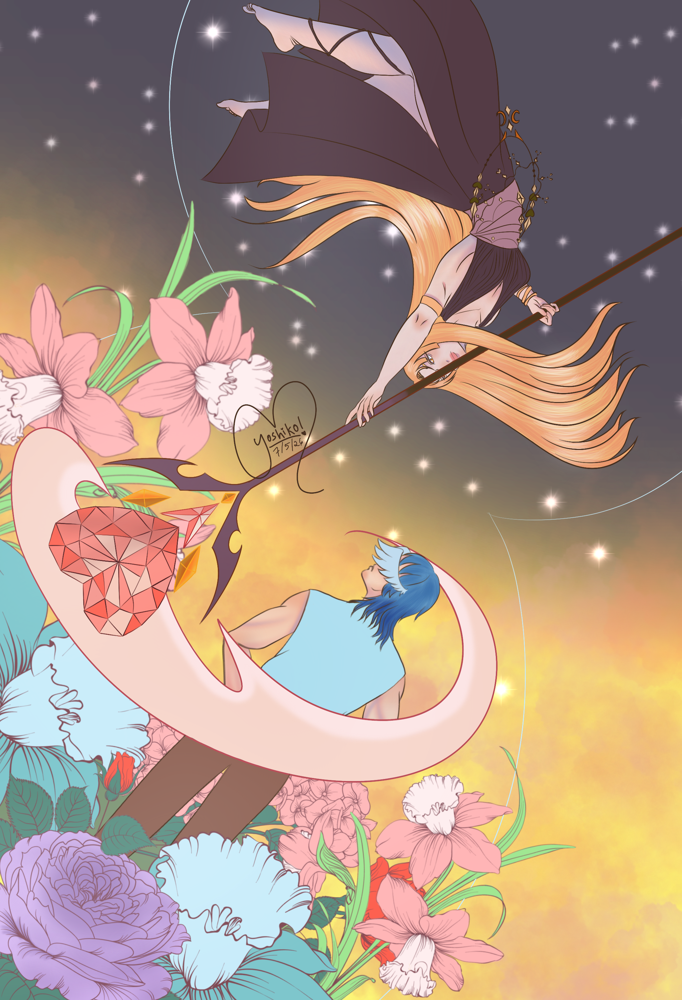

During the creation of this project, I was inspired by the following quotes:
"Time: The Killer & The Healer"
I love this quote because to me, Time is moving. It can be unglorious at times, but it also has the power to heal from our wounds even takes time for it.
I was thinking of incorporating the concept of time into my art project, exploring how it can be both a destructive force and a healing one.
──── ୨୧ ────
So, I try search in Pinterst for some inspirational and ideas at time. Meanwhile I search for other sources of inspiration, there is a hint of I can think: A woman and a man, in a hourglass.
──── ୨୧ ────
So, that witll be my visual rough idea.
After brainstorming and sketching, I finally figure out how to representing them.
The hourglass symbolizes the passage of time,
while the figures within it represent the dual nature of time's impact on our lives.
A girl who with the scythe resembles of how time could kill us.
A guy who surrounded by flowers represents the healing aspect.
I choose night and day as the contrasting elements to shows the duality of time.

TIME: THE KILLER & THE HEALER by Yoshiko Ai
Here is a time-lapse video of the creation process: